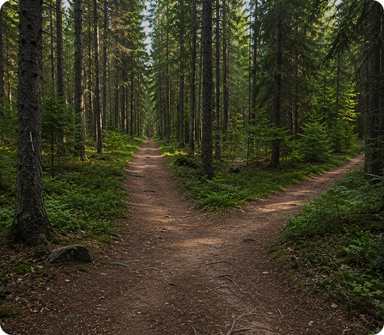
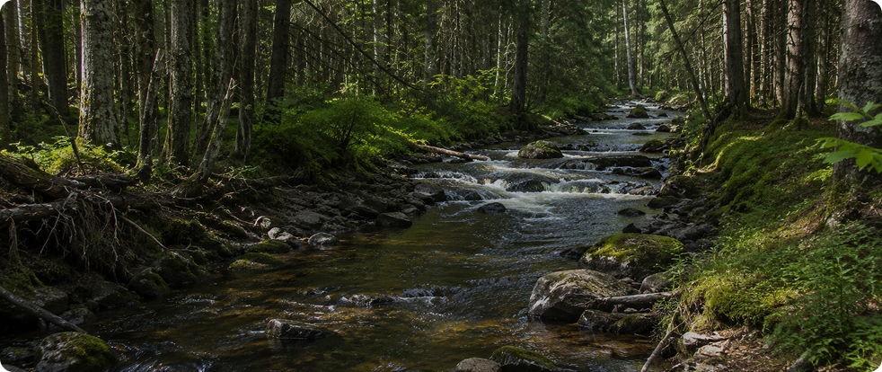
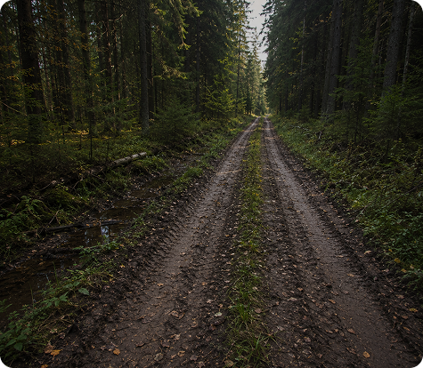
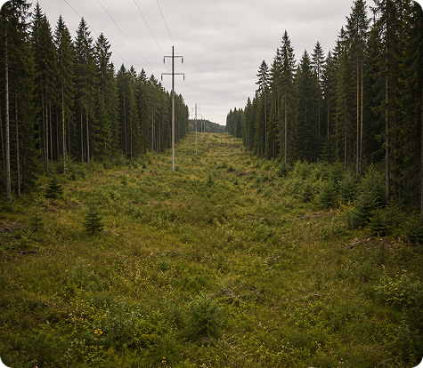
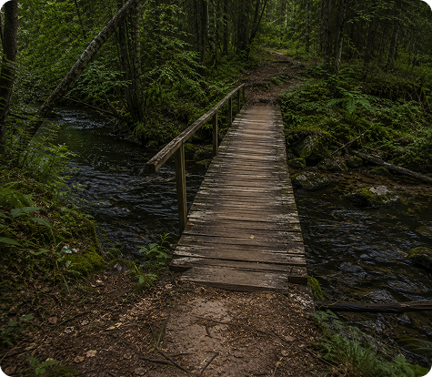

Даже без навигатора и карты лес оставляет множество подсказок, которые помогают сохранять направление движения. Тропы, просеки, ручьи и заметные объекты позволяют лучше ориентироваться на местности и быстрее принимать решения на маршруте.
Важно помнить, что один ориентир редко даёт полную картину. Намного надёжнее использовать сразу несколько признаков и постоянно сопоставлять их между собой.
Почему важно замечать ориентиры
Потеря ориентиров обычно происходит постепенно. Человек продолжает движение, перестаёт обращать внимание на детали вокруг и спустя время уже не может уверенно определить своё местоположение.
Чем раньше замечены характерные объекты местности, тем проще контролировать маршрут и понимать направление движения.
Даже знакомая прогулка становится безопаснее, если регулярно отмечать ключевые ориентиры вокруг себя.


На какие ориентиры обращать внимание
Тропы
Помогают определить направление движения и найти знакомый маршрут
Просеки
Часто выводят к дорогам, линиям электропередач или населённым пунктам
Водные объекты
Ручьи и небольшие реки помогают понимать рельеф местности
Перед продолжением маршрута полезно периодически останавливаться и оценивать окружающую обстановку. Несколько секунд наблюдения помогают избежать ошибок в дальнейшем.
Какие ориентиры самые полезные
Лесные тропы
Самый распространённый ориентир для движения и возвращения обратно
Просеки
Широкие прямые коридоры между деревьями, хорошо заметные даже издалека
Линии электропередач
Часто проходят через большие лесные массивы и помогают сохранять направление
Ручьи и реки
Позволяют понимать особенности рельефа и направление стока воды
Дороги
Один из самых надёжных ориентиров для выхода к людям
Мосты и переправы
Редкие, но очень заметные контрольные точки маршрута
Никогда не полагайся только на один ориентир. Тропы могут раздваиваться, ручьи менять направление, а просеки пересекаться. Используй сразу несколько признаков местности одновременно



Как использовать тропы правильно
Многие ошибки происходят на развилках и пересечениях маршрутов.
Если тропа внезапно разделяется, не стоит сразу выбирать направление наугад. Лучше остановиться и оценить несколько признаков одновременно.
Сравни ширину троп
Основная тропа обычно заметнее и используется чаще
Обрати внимание на следы
Следы людей, велосипедов или животных могут подсказать интенсивность движения
Запомни точку развилки
Это поможет вернуться обратно при необходимости
Проверь направление по карте
Даже офлайн-карта поможет подтвердить выбор
Сохраняй спокойствие
Не принимай решение на ходу
Природные ориентиры, которые легко пропустить
Заметный холма
Помогает оценить окружающую местность с высоты
Крупные камни
Хорошо запоминаются и подходят как контрольные точки
Поляны
Позволяют лучше понять своё положение относительно пространства леса
Во время прогулки полезно мысленно строить простую карту местности. Запоминай последовательность ориентиров, а не отдельные объекты. Так намного проще восстановить маршрут обратно.
ПРОКАЧИВАЙ СВОИ НАВЫКИ
Если ориентиры перестали совпадать
Иногда окружающая местность начинает выглядеть иначе, чем ожидалось. В такой ситуации важно не продолжать движение автоматически.
Остановись
Не уходи дальше в неизвестном направлении
Сравни окружающую местность
Найди ближайшие знакомые ориентиры
Проверь карту
Определи последние подтверждённые точки маршрута
Вернись к известному месту
Если есть сомнения, лучше вернуться к последней развилке или заметному объекту
Оцени направление движения
Убедись, что продолжаешь маршрут осознанно
Лучший способ не потеряться — замечать ориентиры ещё до того, как появятся сомнения в маршруте. Чем чаще ты сверяешь местность с планом прогулки, тем проще сохранять направление